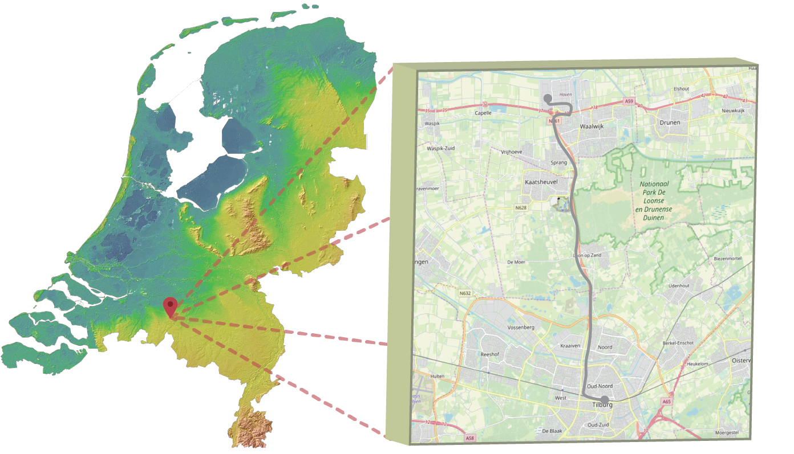

GIS 710 - Geospatial Analytics for Grand Challenges
Examining the Spatial Relationship between Landscape Characteristics and Cyclists’ Skin Conductivity
Garrett C. Millar
Emotions
- Emotions
- Measuring Emotion
- Emotions in Space
- Spatial-Emotional Analytics in Urban Planning
Study Area — Netherlands
| Area of Interest: Cycling Highway between Tilburg and Waalwijk |
Framework for Cyclists' Emotional Experiences

Scholarly Significance
- General fidelity of skin conductance data and low correlations among physiological measures
- Psychology's troubling replication issue
- Proposed methods open wider and clearer window into the fidelity and accuracy of physiological data and the context in which they occur